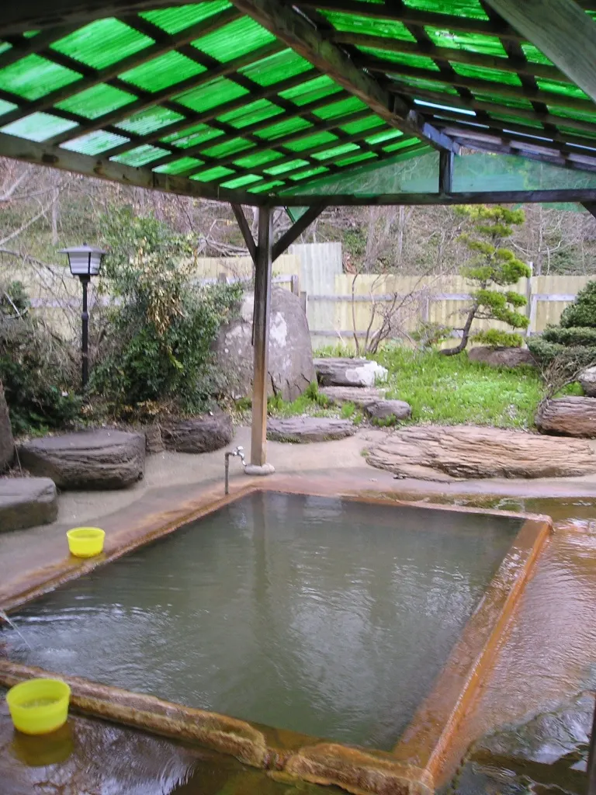
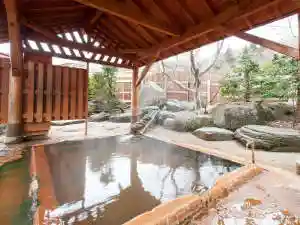
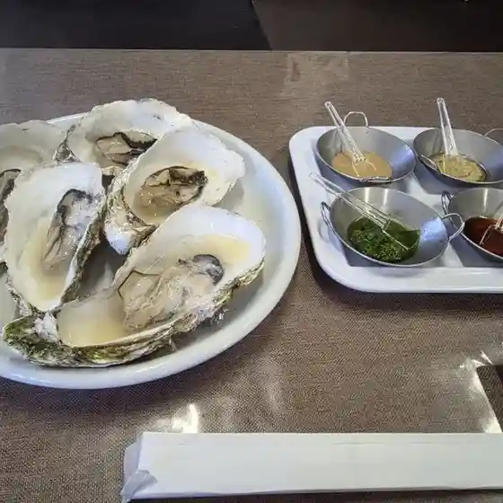
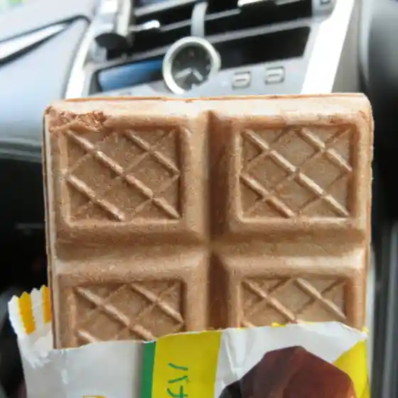
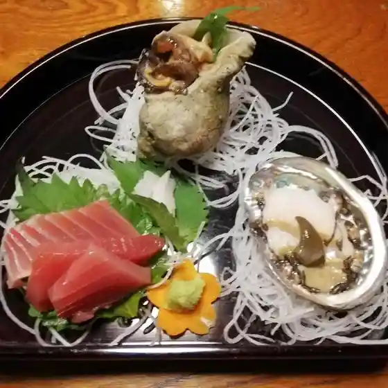
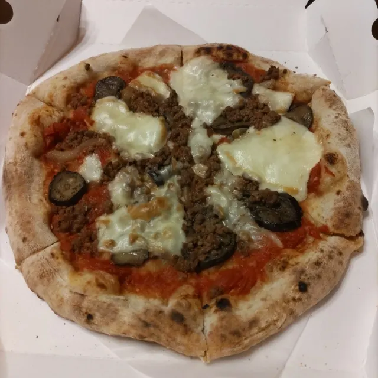

Shiriuchi
Shiriuchi · Hokkaido
Shiriuchi
Highlighted on the Hokkaido map.

Stay
ユートピア和楽園 知内温泉旅館

Yuutopia Wagaku Sono Shiriuchi Onsenryokan
Dining
民宿はまなす

Minshuku Hamanasu
コープさっぽろ しりうち店

Koopu Sapporo Shiriuchi Mise
知内かき小屋

Shiriuchi Kaki Koya
民宿成沢

Minshuku Narisawa
居酒屋・民

Izakaya Tami
セイコーマート 知内元町店

Seikoomaato Shiriuchi Motomachi Mise
海峡の宿 然

Kaikyou No Yado Zen
PIZZERIA FOLGORE

Pizzeria Folgore
やごし本舗
Yagoshi Honpo
秋元水産 直売所
Akimoto Suisan Chokubai Tokoro
鮨旬
Sushi Jun
らーめん蔵や
Raamen Kura Ya
LAWSON 知内店
Lawson Shiriuchi Mise
清八
Seihachi
ムラカミヤ
Murakamiya
セブンイレブン 知内町店
Sebun'Irebun Shiriuchi Machi Mise
竹内旅館
Takeuchi Ryokan
海の宿矢越
Umi No Yado Yagoshi
あすなろパン工房 しりうち店
Asunaro Pan Koubou Shiriuchi Mise
横山旅館
Yokoyama Ryokan
レストラン北都
Resutoran Hokuto
ユーターン
Yuutaan
和さび
Wasa Bi
知内温泉 ユートピア和楽園
Shiriuchi Onsen Yuutopia Wagaku Sono